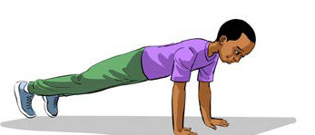
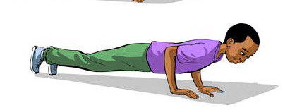

Namna ya kufanya zoezi la kunyanyua magoti juu:
(i)Kimbia huku ukiinua magoti juu, kama inavyoonekana katika Kielelezo namba 2.
(ii)Fanya zoezi hili kwa sekunde 30 hadi 60 mara 3.


Kielelezo namba 2:Kufanya zoezi la kunyanyua magoti juu

Kazi ya kufanya namba 2
(a)
Fanya zoezi la kunyanyua magoti juu ukiwa peke yako.
(b)
Katika jozi, shirikiana kufanya zoezi la kunyanyua magoti juu.
(c)
Zoezi la kujiinua kwa mikono
Zoezi la kujiinua kwa mikono huimarisha misuli ya mikono, mabega na kifua. Hii husaidia wachezaji wanaposhiriki katika michezo hususani mpira wa miguu na netiboli katika kupasi mpira kwa nguvu pamoja na kushindana kinguvu na wachezaji pinzani.
Namna ya kufanya zoezi la kujiinua kwa mikono:
(i)
Lala na egemeza mwili kwenye mikono na vidole vya miguu;
(ii)
Inua mwili kwa kujisukuma juu na mikono mpaka inyooke kikamilifu;
(iii)
Shusha mwili polepole hadi karibu na sakafu bila kuigusa; na
(iv)
Rudia mara 10 hadi 15 kwa seti 3 kwa kufuata hatua (i-iii) zilizoainishwa kama zinavyoonekana katika Kielelezo namba 3.


Kielelezo namba 3: Kufanya zoezi la kujiinua kwa mikono